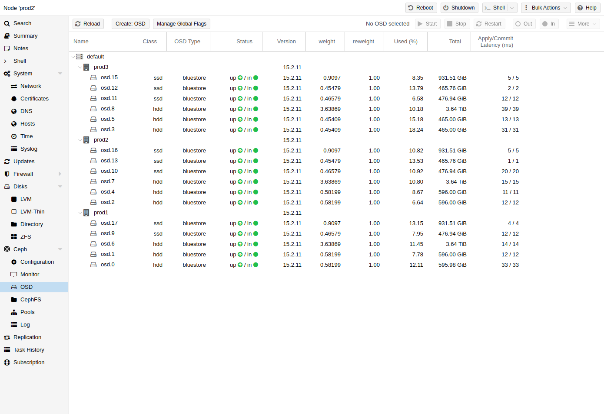

Ceph Object Storage Daemons store objects for Ceph over the network. It is recommended to use one OSD per physical disk.
You can create an OSD either via the Proxmox VE web interface or via the CLI using
pveceph. For example:
pveceph osd create /dev/sd[X]
We recommend a Ceph cluster with at least three nodes and at least 12 OSDs, evenly distributed among the nodes.
If the disk was in use before (for example, for ZFS or as an OSD) you first need to zap all traces of that usage. To remove the partition table, boot sector and any other OSD leftover, you can use the following command:
ceph-volume lvm zap /dev/sd[X] --destroy
The above command will destroy all data on the disk!
Ceph Bluestore. Starting with the Ceph Kraken release, a new Ceph OSD storage type was introduced called Bluestore [21]. This is the default when creating OSDs since Ceph Luminous.
pveceph osd create /dev/sd[X]
Block.db and block.wal. If you want to use a separate DB/WAL device for your OSDs, you can specify it through the -db_dev and -wal_dev options. The WAL is placed with the DB, if not specified separately.
pveceph osd create /dev/sd[X] -db_dev /dev/sd[Y] -wal_dev /dev/sd[Z]
You can directly choose the size of those with the -db_size and -wal_size parameters respectively. If they are not given, the following values (in order) will be used:
bluestore_block_{db,wal}_size from Ceph configuration…
The DB stores BlueStore’s internal metadata, and the WAL is BlueStore’s internal journal or write-ahead log. It is recommended to use a fast SSD or NVRAM for better performance.
Ceph Filestore. Before Ceph Luminous, Filestore was used as the default storage type for Ceph OSDs. Starting with Ceph Nautilus, Proxmox VE does not support creating such OSDs with pveceph anymore. If you still want to create filestore OSDs, use ceph-volume directly.
ceph-volume lvm create --filestore --data /dev/sd[X] --journal /dev/sd[Y]
If you experience problems with an OSD or its disk, try to troubleshoot them first to decide if a replacement is needed.
To destroy an OSD, navigate to the <Node> → Ceph → OSD panel or use the mentioned CLI commands on the node where the OSD is located.
Make sure the cluster has enough space to handle the removal of the OSD.
In the Ceph → OSD panel,if the to-be destroyed OSD is still up and in
(non-zero value at AVAIL), make sure that all OSDs have their Used (%)
value well below the nearfull_ratio of default 85%.
This way you can reduce the risk from the upcoming rebalancing, which may cause OSDs to run full and thereby blocking I/O on Ceph pools.
Use the following command to get the same information on the CLI:
ceph osd df tree
If the to-be destroyed OSD is not out yet, select the OSD and click on
Out. This will exclude it from data distribution and start a rebalance.
The following command does the same:
ceph osd out <id>
Click on Stop. If stopping is not safe yet, a warning will appear, and you should click on Cancel. Try it again in a few moments.
The following commands can be used to check if it is safe to stop and stop the OSD:
ceph osd ok-to-stop <id> pveceph stop --service osd.<id>
Finally:
To remove the OSD from Ceph and delete all disk data, first click on More → Destroy. Enable the cleanup option to clean up the partition table and other structures. This makes it possible to immediately reuse the disk in Proxmox VE. Then, click on Remove.
The CLI command to destroy the OSD is:
pveceph osd destroy <id> [--cleanup]